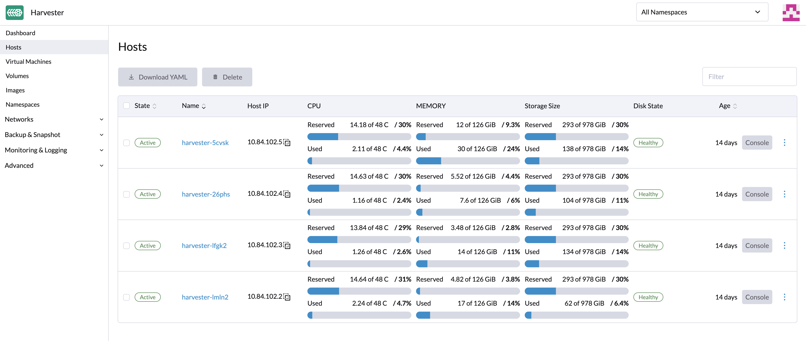
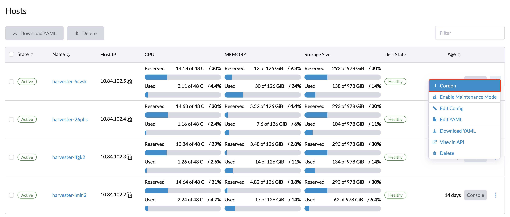
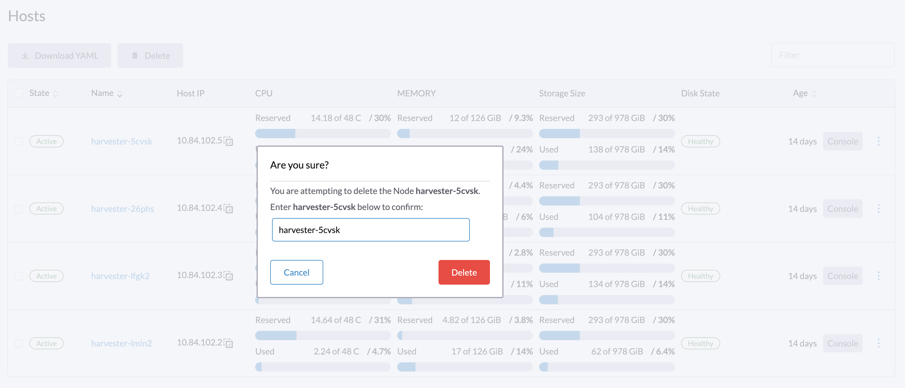
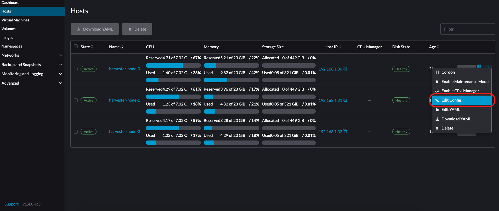
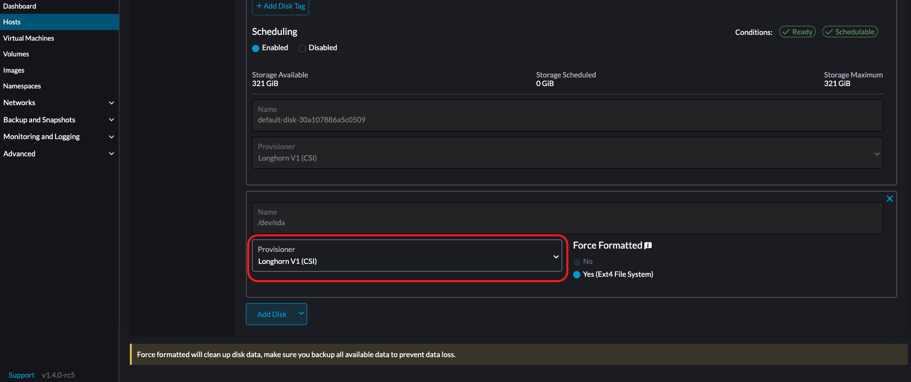
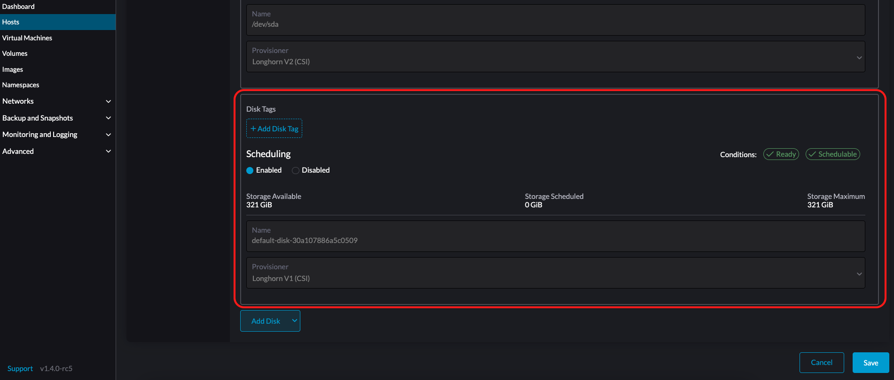
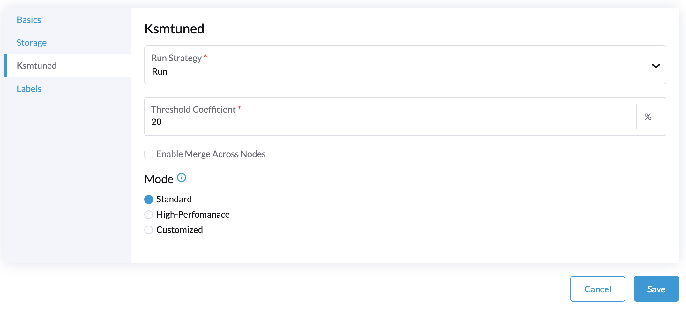

Gestión de hosts
Los usuarios pueden ver y gestionar SUSE Virtualization nodos desde la página del host. El primer nodo siempre se configura como un nodo de gestión del clúster. Cuando hay tres o más nodos, los otros dos nodos que se unieron primero se promueven automáticamente a nodos de gestión para formar un clúster HA.
|
Debido a que SUSE Virtualization está construido sobre Kubernetes y utiliza etcd como su base de datos, la tolerancia máxima a fallos de nodos es uno cuando hay tres nodos de gestión. |

SUSE Virtualization reserva recursos de CPU para operaciones a nivel de sistema, por lo que el número total de núcleos indicado en la columna CPU es ligeramente inferior al número real de núcleos en cada host. Para más información, consulte Cálculo del pool de CPU compartido.
Mantenimiento de nodos
Los usuarios administradores pueden habilitar el Modo de Mantenimiento (seleccionar ⋮ > Habilitar Modo de Mantenimiento) para expulsar automáticamente todas las máquinas virtuales de un nodo. Este modo aprovecha la migración por lotes para mover las máquinas virtuales migrables en vivo a otros nodos, lo cual es útil cuando necesitas reiniciar, actualizar el firmware o reemplazar componentes de hardware. Se requieren al menos dos nodos activos para utilizar esta función.
Las máquinas virtuales no migrables pueden impedir que el nodo active el Modo de Mantenimiento. Cuando esto ocurre, debes identificar y apagar manualmente esas máquinas virtuales. Para más información, consulte Migración en Vivo.
Para forzar a las VMs individuales a apagarse en lugar de migrar a otros nodos, añade la etiqueta harvesterhci.io/maintain-mode-strategy y uno de los siguientes valores a esas VMs:
-
Migrate: Migra la VM en vivo a otro nodo en el clúster. Este es el comportamiento predeterminado si la etiquetaharvesterhci.io/maintain-mode-strategyno está configurada. -
ShutdownAndRestartAfterEnable: Reinicia la VM después de que el nodo cambie a modo de mantenimiento. La VM está programada en un nodo diferente. -
ShutdownAndRestartAfterDisable: Apaga la VM cuando el modo de mantenimiento está habilitado y reinicia la VM cuando el modo de mantenimiento está deshabilitado. La VM permanece en el mismo nodo. -
Shutdown: Apaga la VM cuando el modo de mantenimiento está habilitado. La VM permanece apagada en lugar de reiniciarse.
Puedes forzar un apagado colectivo de todas las VMs en un nodo en la pantalla de Habilitar Modo de Mantenimiento. Esto desactiva configuraciones individuales utilizando la etiqueta harvesterhci.io/maintain-mode-strategy.
Para ejecutar un comando especial antes de apagar una VM, considera usar el gancho del ciclo de vida del contenedor PreStop.

Aislamiento de un Nodo
Los nodos aislados se marcan como no programables. El aislamiento es útil cuando deseas evitar que se programen nuevas cargas de trabajo en un nodo. Puedes desaislar un nodo para hacerlo programable nuevamente.

Eliminando un Nodo
|
Antes de eliminar un nodo de un SUSE Virtualization clúster, determina si los nodos restantes tienen suficientes recursos de computación y almacenamiento para asumir la carga de trabajo del nodo que se va a eliminar. Compruebe los siguientes elementos:
Si los nodos restantes no tienen suficientes recursos, las VMs pueden fallar al migrar y los volúmenes pueden degradarse cuando eliminas un nodo. |
1. Verifica si el nodo puede ser eliminado del clúster.
Puedes eliminar de forma segura un nodo del plano de control dependiendo de la cantidad y disponibilidad de otros nodos en el clúster.
-
El clúster tiene tres nodos del plano de control y uno o más nodos de trabajo.
Cuando eliminas un nodo del plano de control, un nodo de trabajo será promovido a nodo del plano de control. SUSE Virtualization te permite asignar un rol a cada nodo que se une a un clúster. En versiones anteriores, los nodos de trabajo eran seleccionados aleatoriamente para la promoción. Si prefieres promover nodos específicos, consulta Gestión de Roles y Archivo de Configuración para más información.
La promoción automática de nodos ocurre solo cuando se elimina un nodo del plano de control del clúster. Esto no incluye situaciones en las que un nodo se vuelve no disponible debido a fallos en las comprobaciones de salud. El nodo no saludable mantiene su rol.
-
El clúster tiene tres nodos de plano de control y no tiene nodos de trabajo.
Debes añadir un nuevo nodo al clúster antes de eliminar un nodo del plano de control. Esto asegura que el clúster siempre tenga tres nodos de plano de control y que se pueda formar un quórum incluso si falla un nodo del plano de control.
-
El clúster solo tiene dos nodos de plano de control y no tiene nodos de trabajo.
Eliminar un nodo del plano de control en esta situación no se recomienda porque los datos de etcd no se replican en un clúster de un solo nodo. La falla de un solo nodo puede hacer que etcd pierda su quórum y apague el clúster.
2. Comprueba el estado de los volúmenes.
-
Accede a la interfaz SUSE Storage incrustada.
-
Ve a la pantalla de Volumen.
-
Verifica que el estado de todos los volúmenes sea Saludable.
3. Desaloja réplicas del nodo que se va a eliminar.
-
Accede a la interfaz SUSE Storage incrustada.
-
Ve a la pantalla Nodo.
-
Selecciona el nodo que deseas eliminar, haz clic en el icono en la columna Operación, y luego selecciona Editar nodo y discos.
-
Configure los ajustes siguientes:
-
Programación de Nodos: Selecciona Deshabilitar.
-
Desalojo Solicitado Selecciona Verdadero.
-
-
Haz clic en Guardar.
-
Regresa a la pantalla Nodo y verifica que el valor de Réplicas para el nodo a eliminar sea 0.
|
La expulsión no se puede completar si los nodos restantes no pueden aceptar réplicas del nodo a eliminar. En este caso, algunos volúmenes permanecerán en estado Degraded hasta que añadas más nodos al clúster. |
4. Gestionar máquinas virtuales no migrables
Verifique si hay alguna máquina virtual no migrable.
|
5. Expulse cargas de trabajo del nodo a eliminar.
Puede habilitar el Modo de Mantenimiento en el nodo para migrar automáticamente las VMs y cargas de trabajo. También puede migrar manualmente en vivo las VMs a otros nodos.
Todas las cargas de trabajo han sido expulsadas con éxito si el estado del nodo es Mantenimiento.

|
Si un clúster tiene solo dos nodos de plano de control, SUSE Virtualization no le permite habilitar el Modo de Mantenimiento en ningún nodo. Puede drenar manualmente el nodo a eliminar utilizando el siguiente comando: kubectl drain <node_name> --force --ignore-daemonsets --delete-local-data --pod-selector='app!=csi-attacher,app!=csi-provisioner' De nuevo, eliminar un nodo de plano de control en esta situación es no recomendado porque los datos de etcd no están replicados. La falla de un solo nodo puede hacer que etcd pierda su quórum y apague el clúster. |
6. Elimina los servicios de RKE2 y apaga el nodo.
-
Inicie sesión en el nodo utilizando la cuenta root.
-
Ejecute el script
/opt/rke2/bin/rke2-uninstall.shpara eliminar los servicios de RKE2 que se ejecutan en el nodo. -
Apague el nodo.
7. Elimine el nodo.
-
En la interfaz, vaya a la pantalla de Hosts.
-
Localice el nodo que desea eliminar y luego haga clic en ⋮ → Eliminar.

|
Hay un problema conocido sobre la eliminación forzada del nodo. Una vez resuelto, puede omitir este paso. |
Gestión de funciones
Los problemas de hardware pueden obligarle a reemplazar el nodo de gestión. SUSE Virtualization mejora el proceso introduciendo los siguientes roles:
-
Gestión: Permite que un nodo sea priorizado cuando SUSE Virtualization promueve nodos a nodos de gestión.
-
Testigo: Restringe a un nodo a ser un nodo testigo (solo funciona como un nodo etcd) en un clúster específico.
-
Trabajador: Restringe a un nodo a ser un nodo trabajador (nunca promovido a nodo de gestión) en un clúster específico.
|
SUSE Virtualization actualmente permite solo un nodo testigo en el clúster. |
Para más información sobre la asignación de roles a nodos, consulte Instalación ISO.
Gestión de múltiples discos
Añadir discos adicionales
Los usuarios pueden ver y añadir múltiples discos como volúmenes de datos adicionales desde la página de edición del host.
-
Vaya a la página de Hosts.
-
En el nodo que desea modificar, haga clic en ⋮ → Editar configuración.

-
Selecciona la pestaña Almacenamiento y haz clic en Añadir Disco.

SUSE Virtualization no soporta añadir particiones como discos adicionales. Si deseas añadirlo como un disco adicional, asegúrate de eliminar todas las particiones primero (por ejemplo, usando
fdisk). -
Selecciona un aprovisionador para el disco.
-
LonghornV1 (CSI): Este es el aprovisionador por defecto.

Debes establecer Forzar Formato a Sí si el dispositivo de bloque nunca ha sido forzado a formatear.

-
LVM: Selecciona este aprovisionador si deseas usar Controlador CSI LVM (Experimental) para crear volúmenes persistentes para tus cargas de trabajo.

-
-
Haz clic en Guardar.
-
En la pantalla de detalles del host, verifica que los discos se hayan añadido y que se haya establecido el aprovisionador correcto.
También puedes añadir etiquetas de almacenamiento si deseas que los datos del volumen SUSE Storage se almacenen en nodos o discos específicos. Las etiquetas de almacenamiento solo se pueden usar con los aprovisionadores LonghornV1 (CSI) y LonghornV2 (CSI).


|
Para que SUSE Virtualization identifique los discos, cada disco necesita tener un WWN único. De lo contrario, SUSE Virtualization se negará a añadir el disco.
Si tu disco no tiene un WWN, puedes formatearlo con el sistema de archivos |
+
|
Si estás probando SUSE Virtualization en un entorno QEMU, necesitarás usar QEMU v6.0 o posterior. Las versiones anteriores de QEMU siempre generarán el mismo WWN para la emulación de discos NVMe. Esto hará que SUSE Virtualization no añada los discos adicionales, como se explicó anteriormente. Sin embargo, aún puedes añadir un disco virtual con el controlador SCSI. La información del WWN podría añadirse manualmente junto con la operación de adjuntar el disco. Para más detalles, por favor consulta el guion. |
Etiquetas de almacenamiento
La función de etiquetas de almacenamiento permite que solo ciertos nodos o discos se utilicen para almacenar datos de volumen SUSE Storage. Por ejemplo, los datos sensibles al rendimiento pueden utilizar solo los discos de alto rendimiento que pueden etiquetarse como fast, ssd o nvme, o solo los nodos de alto rendimiento etiquetados como baremetal.
Esta función admite tanto discos como nodos.
Configuración
Las etiquetas se pueden configurar a través de la interfaz de usuario SUSE Virtualization en la página del host:
-
Haz clic en
Hosts->Edit Config->Storage -
Haz clic en
Add Host/Disk Tagspara empezar a escribir y pulsa enter para añadir nuevas etiquetas. -
Haz clic en
Savepara actualizar etiquetas. -
En la página StorageClasses, crea una nueva clase de almacenamiento y selecciona esas etiquetas definidas en los campos
Node SelectoryDisk Selector.
Todos los volúmenes programados existentes en el nodo o disco no se verán afectados por las nuevas etiquetas.
|
Cuando se especifican múltiples etiquetas para un volumen, el disco y los nodos (a los que pertenece el disco) deben tener todas las etiquetas especificadas para ser utilizables. |
Eliminar discos
Antes de eliminar un disco, primero debes desalojar las réplicas SUSE Storage en el disco.
|
Los datos de la réplica se reconstruirán automáticamente en otro disco para mantener la alta disponibilidad. |
Identifica el disco a eliminar
-
Ve a la página Hosts.
-
En el nodo que contiene el disco, selecciona el nombre del nodo y ve a la pestaña Almacenamiento.
-
Encuentra el disco que deseas eliminar. Supongamos que queremos eliminar
/dev/sdb, y el punto de montaje del disco es/var/lib/harvester/extra-disks/1b805b97eb5aa724e6be30cbdb373d04.

Desaloja réplicas (SUSE Storage panel de control)
-
Por favor, sigue esta sesión para habilitar el panel de control SUSE Storage integrado.
-
Visita el panel de control SUSE Storage y ve a la página Nodo.
-
Expande el nodo que contiene el disco. Confirma que el punto de montaje
/var/lib/harvester/extra-disks/1b805b97eb5aa724e6be30cbdb373d04está en la lista de discos.
-
Selecciona Editar nodo y discos.

-
Desplázate hasta el disco que deseas eliminar.
-
Establece
SchedulingenDisable. -
Establece
Eviction RequestedenTrue. -
Selecciona Guardar. No selecciones el icono de eliminar.

-
-
El disco será deshabilitado. Por favor, espera hasta que el recuento de réplicas del disco sea
0para proceder con la eliminación del disco.

Restricciones de Distribución de Topología
Las etiquetas de nodo se utilizan para identificar los dominios de topología en los que se encuentra cada nodo. Puedes configurar etiquetas como topology.kubernetes.io/zone en la interfaz de usuario SUSE Virtualization.
-
Ve a Hosts.
-
Selecciona el nodo objetivo y luego selecciona ⋮ → Editar Config.
-
En la pestaña Etiquetas, haz clic en Añadir Etiqueta y luego especifica la etiqueta
topology.kubernetes.io/zoney un valor. -
Haz clic en Guardar.
La etiqueta se sincroniza automáticamente con el nodo SUSE Storage correspondiente.
Hugepages
Los hugepages mejoran la gestión de memoria en Linux al permitir que el núcleo de Linux asigne memoria en bloques significativamente más grandes que el predeterminado de 4 KB. Tamaños de página más grandes mejoran la eficiencia al reducir el tiempo de CPU requerido para que el núcleo de Linux procese las asignaciones de memoria. Esto, a su vez, puede aumentar el rendimiento general del sistema.
Existen dos tipos de hugepages:
-
Persistente o estática: Pre-asignado en función de los parámetros de arranque del núcleo de Linux relevantes o configuraciones de SUSE Virtualization.
-
Anónimo o transparente: Asignado y desasignado automáticamente por el núcleo de Linux.
Puedes ver información sobre la asignación actual de hugepages para cada nodo.
-
En la interfaz de usuario SUSE Virtualization, ve a la pantalla Hosts.
-
Haz clic en el nodo objetivo, luego selecciona la pestaña Hugepages.
La información en la pestaña Hugepages se divide en dos secciones:
-
Meminfo: Muestra la cantidad total de memoria en uso para hugepages anónimos (transparentes), el tamaño de hugepage por defecto y detalles sobre hugepages persistentes (estáticas).
El campo Anonymous Hugepages (bytes) normalmente muestra un valor grande, reflejando la RAM utilizada automáticamente por el núcleo para hugepages transparentes.
Por el contrario, el campo Total Hugepages, que representa hugepages asignados estáticamente, normalmente se mantiene en
0. Sin embargo, si el motor de datos Longhorn V2 está habilitado, este valor cambia a1024. -
Transparent Hugepages: Muestra la configuración actual de hugepages transparentes.
La siguiente tabla describe las opciones y los valores por defecto para cada configuración:
Opción Valores admitidos Valor por defecto Habilitado
Always,Madvise,NeverAlwaysShared Memory Enabled
Always,Within Size,Advise,Never,Deny,ForceNeverDefragmentación
Always,Defer,Defer+Madvise,Madvise,NeverMadvisePuedes modificar estas configuraciones para cada nodo seleccionando ⋮ → Editar Config y luego haciendo clic en la pestaña Hugepages.
Para más información sobre las opciones, consulta Soporte de Transparent Hugepage en la documentación del núcleo de Linux.
Modo Ksmtuned
Ksmtuned es una herramienta de automatización de KSM desplegada como un DaemonSet para ejecutar Ksmtuned en cada nodo. Iniciará o detendrá el KSM observando el porcentaje de memoria disponible (es decir, Coeficiente de Umbral). Por defecto, necesitas habilitar manualmente Ksmtuned en la interfaz de usuario de cada nodo. Podrás ver las estadísticas del KSM desde la interfaz de usuario del nodo después de 1-2 minutos.(consulta KSM para más detalles).
Ejecución Rápida
-
Ve a la página Hosts.
-
En el nodo que deseas modificar, haz clic en ⋮ → Editar Config.
-
Selecciona la pestaña Ksmtuned y selecciona Ejecutar en Estrategia de Ejecución.
-
(Opcional) Puedes modificar Coeficiente de Umbral según sea necesario.

-
Haz clic en Guardar para actualizar.
-
Espera alrededor de 1-2 minutos y podrás comprobar sus Estadísticas haciendo clic en la pestaña →Ksmtuned de tu nodo.

Parámetros
Estrategia de Ejecución:
-
Terminar: Terminar Ksmtuned y KSM. Las VMs aún pueden usar páginas de memoria compartida.
-
Ejecutar: Ejecutar Ksmtuned.
-
Podar: Terminar Ksmtuned y podar las páginas de memoria de KSM.
Coeficiente de Umbral: configura el porcentaje de memoria disponible. Si la memoria disponible es menor que el umbral, se iniciará el KSM; de lo contrario, se detendrá el KSM.
Fusionar entre nodos: especifica si las páginas de diferentes nodos NUMA pueden ser fusionadas.
Modo:
-
Estándar: El modo por defecto. El nodo de control ksmd utiliza aproximadamente el 20% de una sola CPU. Utiliza los siguientes parámetros:
Boost: 0
Decay: 0
Maximum Pages: 100
Minimum Pages: 100
Sleep Time: 20-
Alto rendimiento: El nodo ksmd utiliza entre el 20% y el 100% de una sola CPU y tiene una mayor eficiencia en el escaneo y la fusión. Utiliza los siguientes parámetros:
Boost: 200
Decay: 50
Maximum Pages: 10000
Minimum Pages: 100
Sleep Time: 20-
Personalizado: Puedes personalizar la configuración para alcanzar el rendimiento que deseas.
Ksmtuned utiliza los siguientes parámetros para controlar la eficiencia de KSM:
| Parámetros | Descripción |
|---|---|
Mejorar |
El número de páginas escaneadas se incrementa cada vez que la memoria disponible es menor que el Coeficiente de Umbral. |
Decaimiento |
El número de páginas escaneadas se decrementa cada vez que la memoria disponible es mayor que el Coeficiente de Umbral. |
Páginas Máximas |
Número máximo de páginas por escaneo. |
Páginas Mínimas |
El número mínimo de páginas por escaneo, también la configuración para la primera ejecución. |
Tiempo de Espera (ms) |
El intervalo entre dos escaneos, que se calcula con la fórmula (Tiempo de Espera * 16 * 1024 * 1024 / Memoria Total). Mínimo: 10ms. |
Por ejemplo, supón que tienes un nodo de memoria de 512GiB que utiliza los siguientes parámetros:
Boost: 300
Decay: 100
Maximum Pages: 5000
Minimum Pages: 1000
Sleep Time: 50Cuando Ksmtuned se inicia, inicializa pages_to_scan en KSM a 1000 (Páginas Mínimas) y establece sleep_millisecs en 10 (50 * 16 * 1024 * 1024 / 536870912 KiB < 10).
KSM se inicia cuando la memoria disponible cae por debajo del Coeficiente de Umbral. Si detecta que está en ejecución, pages_to_scan se incrementa en 300 (Boost) cada minuto hasta alcanzar 5000 (Páginas Máximas).
KSM se detendrá cuando la memoria disponible esté por encima del Coeficiente de Umbral. Si detecta que está detenido, pages_to_scan se decrementa en 100 (Decaimiento) cada minuto hasta alcanzar 1000 (Páginas Mínimas).
Configuración de NTP
La sincronización de tiempo es un aspecto importante de la arquitectura de clúster distribuido. Debido a esto, SUSE Virtualization proporciona una forma más sencilla de configurar los ajustes de NTP.
SUSE Virtualization soporta la configuración de NTP en la pantalla de Ajustes de la UI SUSE Virtualization (Avanzado > Ajustes). Puedes configurar los ajustes de NTP para todo el clúster SUSE Virtualization en cualquier momento, y los ajustes se aplican a todos los nodos del clúster.

Puedes configurar múltiples servidores NTP a la vez.

Puedes comprobar los ajustes en la anotación node.harvesterhci.io/ntp-service en los nodos de Kubernetes:
-
ntpSyncStatus: Estado de la conexión a los servidores NTP (valores posibles:disabled,syncedyunsynced) -
currentNtpServers: Lista de servidores NTP existentes$ kubectl get nodes harvester-node-0 -o yaml |yq -e '.metadata.annotations.["node.harvesterhci.io/ntp-service"]' {"ntpSyncStatus":"synced","currentNtpServers":"0.suse.pool.ntp.org 1.suse.pool.ntp.org"}
|

Configuración de nodo nativo de nube
Puede que necesites personalizar uno o más nodos después de instalar SUSE Virtualization. Este proceso generalmente implica actualizar la configuración de tiempo de ejecución y modificar archivos en el directorio /oem de cada nodo para que los cambios persistan después de reiniciar.
Estas personalizaciones se pueden describir en un manifiesto de Kubernetes y luego aplicarse al clúster subyacente utilizando kubectl u otras herramientas centradas en GitOps como SUSE® Rancher Prime: Continuous Delivery.
|
Las configuraciones incorrectas pueden comprometer la capacidad de un nodo SUSE Virtualization para arrancar, o incluso dañar la estabilidad general del clúster. Puedes prevenir tales problemas leyendo la documentación del kit de herramientas Elemental para aprender a personalizar Elemental correctamente. |
Creando un recurso de CloudInit
La personalización del nodo SUSE Virtualization está limitada solo por tu creatividad y por lo que el marcado del kit de herramientas Elemental puede expresar sintácticamente. La documentación, por lo tanto, no puede proporcionar una lista exhaustiva de posibles personalizaciones y casos de uso.
Ejemplo: Quieres añadir una clave SSH autorizada para el usuario rancher por defecto en todos los nodos.
Comienza creando un manifiesto de Kubernetes para un recurso de CloudInit.
file: ssh_access.yaml
apiVersion: node.harvesterhci.io/v1beta1
kind: CloudInit
metadata:
name: ssh-access
spec:
matchSelector: {}
filename: 99_ssh.yaml
contents: |
stages:
network:
- authorized_keys:
rancher:
- ssh-ed25519 AAAA...Este manifiesto describe un documento cloud-init de Elemental que se aplicará a todos los nodos (porque el campo matchSelector: {} vacío coincide con todo). El documento YAML en el campo .spec.contents se renderizará a /oem/99_ssh.yaml (debido al campo .spec.filename.)
Aplica este ejemplo utilizando el comando kubectl apply -f ssh_access.yaml.
|
Reinicia los nodos SUSE Virtualization relevantes para que el ejecutor del kit de herramientas Elemental pueda aplicar la nueva configuración al arrancar. |
Especificación del recurso de CloudInit
| Campo | required | Descripción |
|---|---|---|
selector de coincidencia |
Sí |
Configuración que te permite especificar los nodos que recibirán los cambios de configuración. |
nombre_archivo |
Sí |
Nombre del archivo que aparece en |
contenido |
Sí |
Archivo de estilo cloud-init del kit de herramientas Elemental que se renderizará a un archivo en |
en pausa |
No |
Cuando se establece en |
El campo matchSelector se puede utilizar para dirigir nodos específicos o grupos de nodos en función de sus etiquetas.
Ejemplo:
matchSelector:
kubernetes.io/hostname: "harvester-node-1"|
Todos los pares clave-valor de etiquetas listados en el campo En el siguiente ejemplo, |
Actualizando un recurso de CloudInit
Puedes usar el comando kubectl edit para actualizar un recurso de CloudInit. Sin embargo, hay una advertencia si el campo matchSelector se actualiza para excluir uno o más nodos de la personalización. Consulta la nota en la sección [Deleting a CloudInit Resource] sobre cómo revertir personalizaciones.
# kubectl edit cloudinit CLOUDINIT_NAMEEliminando un recurso de CloudInit
Puedes usar el comando kubectl delete para eliminar un recurso de CloudInit del clúster SUSE Virtualization.
# kubectl delete cloudinit CLOUDINIT_NAME|
SUSE Virtualization no puede "revertir" personalizaciones descritas anteriormente porque el recurso de CloudInit puede describir cualquier cosa que se pueda expresar como una personalización del kit de herramientas Elemental, incluyendo comandos de shell arbitrarios. En el ejemplo [Creating a CloudInit Resource], el archivo YAML contiene la sección Eres responsable de modificar o crear un recurso de CloudInit que revierta los cambios (si es necesario) antes de reiniciar el nodo. |
Resolución de problemas de implementaciones de CloudInit
Si un documento de cloud-init del kit de herramientas Elemental no aparece en /oem o no contiene los contenidos esperados, el bloque de estado del recurso de CloudInit podría contener pistas útiles.
# kubectl get cloudinit CLOUDINIT_NAME -o yamlstatus:
rollouts:
harvester-dngmf:
conditions:
- lastTransitionTime: "2024-02-28T22:31:23Z"
message: ""
reason: CloudInitApplicable
status: "True"
type: Applicable
- lastTransitionTime: "2024-02-28T22:31:23Z"
message: Local file checksum is the same as the CloudInit checksum
reason: CloudInitChecksumMatch
status: "False"
type: OutOfSync
- lastTransitionTime: "2024-02-28T22:31:23Z"
message: 99_ssh.yaml is present under /oem
reason: CloudInitPresentOnDisk
status: "True"
type: PresentLos pod(s) harvester-node-manager en el espacio de nombres harvester-system también pueden contener algunas pistas sobre por qué no está renderizando un archivo a un nodo.
Este pod es parte de un daemonset, por lo que puede ser útil comprobar el pod que se está ejecutando en el nodo de interés.
Consola remota
Puedes configurar la URL de la consola para la gestión remota del servidor. Esta consola es particularmente útil en entornos donde el acceso físico es limitado.
-
En la interfaz de usuario SUSE Virtualization, ve a Hosts.
-
Localiza el host de destino y luego selecciona ⋮ → Editar Config.

-
Especifica la URL de la Consola y luego haz clic en Guardar.
Ejemplo (con HPE iLO):

-
Haz clic en Consola para acceder al servidor remoto.

Rotación de certificados caducados
Si los certificados RKE2 han caducado, no puedes usar la configuración auto-rotate-rke2-certificates para rotarlos. La configuración solo funciona cuando el clúster (cluster.provisioning) está marcado como Ready.
> kubectl get cluster.provisioning -n fleet-local local -o yaml | yq -e '.status.conditions[] | select(.type=="Ready")'
lastUpdateTime: "2025-10-22T06:41:33Z"
status: "True"
type: ReadySi el valor del campo status es False, debes rotar manualmente los certificados siguiendo estos pasos en cada nodo:
-
Inicia sesión en el nodo utilizando la cuenta root.
-
Detén el servicio RKE2.
-
Nodos de gestión
systemctl stop rke2-server -
Nodos de trabajo
systemctl stop rke2-agent
-
-
Rota los certificados RKE2.
/opt/rke2/bin/rke2 certificate rotate -
Inicia el servicio RKE2.
-
Nodos de gestión
systemctl start rke2-server -
Nodos de trabajo
systemctl start rke2-agent
-
-
Reinicia
rancher-system-agentel servicio.systemctl restart rancher-system-agent